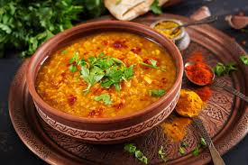
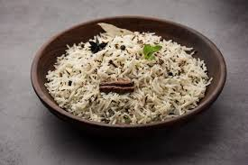
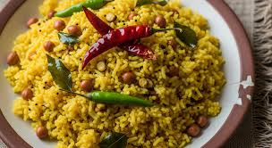
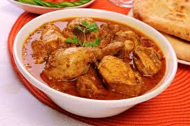
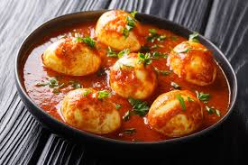

Simple Meals
These meal recipes are easy and useful for students. Meals like dal, rice, curry, and tamarind rice are filling and can be prepared with simple ingredients.
Dal with Tempering (Tadka Dal)

Dal with tempering (tadka) is a very common and healthy Indian dish made with lentils. First, the dal is cooked until it becomes soft and smooth. Then a special tempering is added using hot oil, mustard seeds, cumin seeds, garlic, and curry leaves. This step gives strong flavor and aroma. Dal is usually eaten with rice or roti and is a very good option for students because it is simple, low cost, and full of protein.
Time: 30 minutes
Difficulty: Easy
Cost: Low
Spice: Mild
Jeera Rice

Jeera rice is a simple and flavorful rice dish made with cumin seeds. The cumin is fried in oil first, which gives a nice smell and taste. Then rice is added and cooked until soft. This dish is light but tasty and goes well with dal, curry, or gravy dishes. It is very easy to prepare and perfect for students who want a quick meal.
Time: 20 minutes
Difficulty: Easy
Cost: Low
Spice: None
Tamarind Rice

Tamarind rice is a tangy and slightly spicy South Indian dish. It is made by mixing cooked rice with tamarind paste and spices. Ingredients like peanuts, mustard seeds, and curry leaves add extra flavor and crunch. This dish is good for travel or lunch because it stays fresh for a long time and does not spoil easily.
Time: 30 minutes
Difficulty: Medium
Cost: Low
Spice: Medium
Chicken Curry

Chicken curry is a rich and flavorful dish made with chicken, onions, tomatoes, and spices. The chicken is cooked slowly so it becomes soft and absorbs all the flavors. Spices like turmeric, chili powder, and garam masala give it a strong taste. This dish is usually eaten with rice or chapati and is a popular meal in many Indian homes.
Time: 40 minutes
Difficulty: Medium
Cost: Medium
Spice: Hot
Egg Curry

Egg curry is a simple and tasty dish made with boiled eggs and spicy gravy. The gravy is prepared using onions, tomatoes, and basic spices. It is easier to cook than chicken curry and takes less time. This makes it a good option for students who want a filling and affordable meal.
Time: 30 minutes
Difficulty: Easy
Cost: Low
Spice: Medium